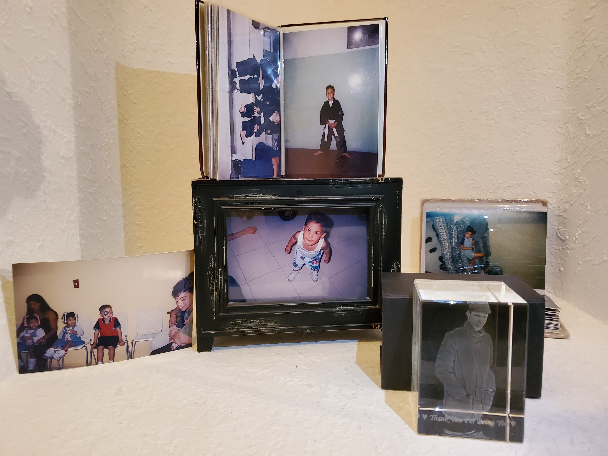
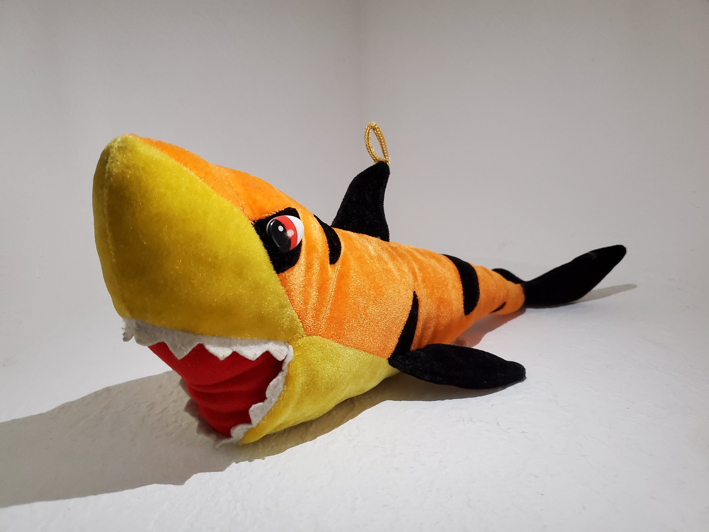
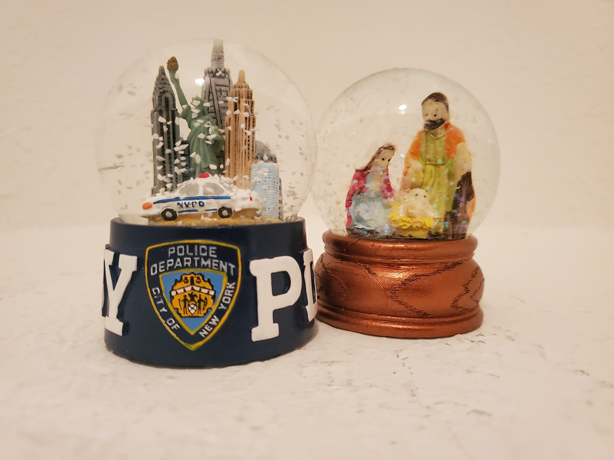

The cup on the left was given to me by my mom when she went to New York, and the left one by my friend when she went to Colombia. Both cups are kept safe on a shelf as display cups.
1
"Cups 02"
I bought this cup when I went on a road trip down the East coast and from time to time I use a little bit of spicy rum to spice up my coffee mornings. It is my favorite cup so far.
2
"Cups 03"
This cup was given to my mom by my sister and me on Mother's day. No, I do not drink Vodka with coffee too, it just looked cool for the picture.
3
"The Heart"
This heart-shaped decoration was given to my sister on her birthday and it is supposed to represent love and harmony for the bearer and give you luck on future relationships.
4
"Lucky Cat"
This moving cat is said to be cursed by my friend and me as it always starts and stops moving on its own at odd times of the night without any indication of being on.
5

"Memoirs"
These pictures are all the evidence that I once had a childhood or that I even exist for that matter. The pictures are most valuable to me and are always kept hidden/safe.
6
"The Pictures"
These pictures are of my family, parents and sister respectively. We love each other very much and have found each other in these troublesome times.
7
"Plush 01"
Who doesn't love Pokemon right? This one is a beautiful Arcanine, a fire dog and it is one of my favorite pokemons and one valuable plush in my collection.
8

"Plush 02"
This plushie was won on my birthday at the amusement park near where I used to live in Venezuela. It now resides in this new house alongsidde my other two plushies.
9
"Plush 03"
Five Nights at Freddy's is one of the scariest game as of today and as soon as its plushie came out on sale I had to get it. It is so creepy and cute at the same time.
10

"Snowballs"
These snowballs are my parents' and they come from two different places, Venezuela and New York. The NYPD is my dad's and the other one my mom's.
11
"Thermos"
The legend of Zelda is one of my favorite games as of yet and when its thermos came out I had to have it. It is as cool as it is convenient I have to say.
12
"Zeus"
These dolls are to pay a tribute to our previous dog Zeus who passed away years ago but will forever be in our hearts and be part of our family.